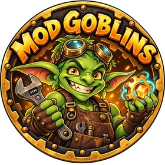

Mod Goblins Wiki
Guides for our ARK: Survival Ascended mods. Each mod has an admin guide for server owners and a short guide for players.
Mods
-
New Life On ARK — Cluster Market
Player market, wallets and rewards shared across every map of a cluster.
Need help?
Open a ticket in the mod's area on the Mod Goblins Discord. If the mod has a Diagnostics page, create a diagnostics file there and add the link to your ticket.